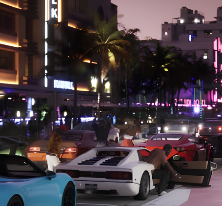
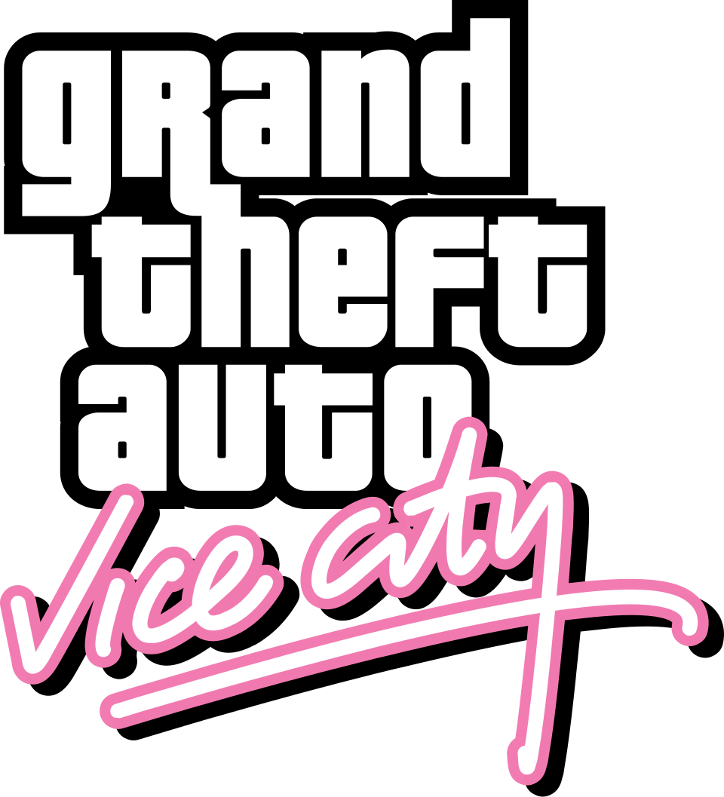
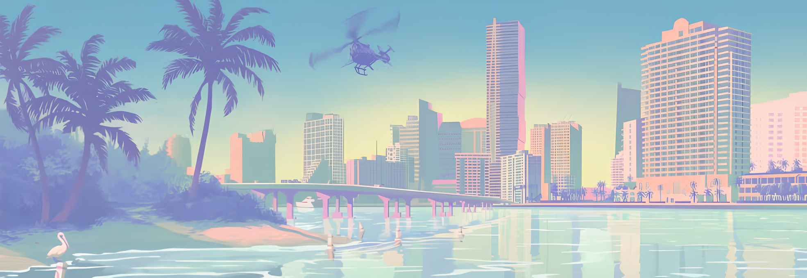
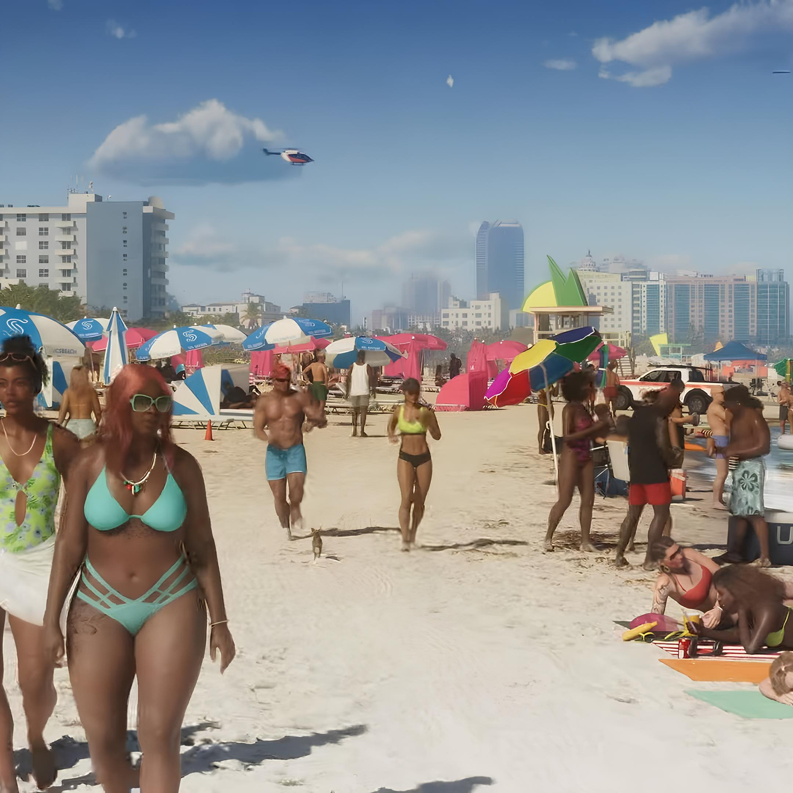
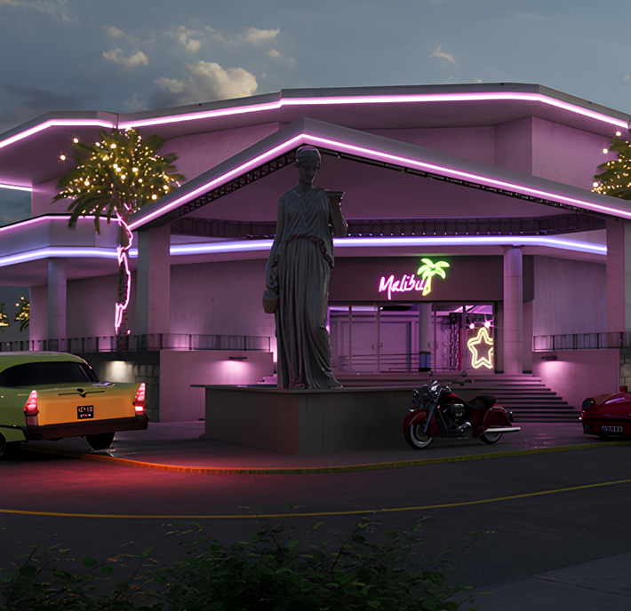

OCEAN DRIVE
A famosa avenida à beira-mar de Vice City Beach, repleta de hotéis art déco coloridos, palmeiras e movimento o dia todo. É o cartão postal da cidade — o lugar perfeito pra ver e ser visto.

A Cidade dos sonhos.

Vice City é uma metrópole fictícia criada pela Rockstar Games, inspirada na Miami dos anos 80. Famosa por seus arranha-céus iluminados, praias paradisíacas e uma vida noturna agitada, a cidade é um dos cenários mais icônicos da história dos videogames.
A cidade é dividida em dois grandes setores separados por uma baía. O continente, repleto de gangues e negócios escusos, e as ilhas, onde ficam as mansões luxuosas, hotéis e cassinos. Cada esquina de Vice City tem sua própria história, seu próprio perigo e seu próprio charme.
Vice City respira cultura dos anos 80. do rock ao funk, das neons às palmeiras. Sua trilha sonora lendária, seus personagens marcantes e sua atmosfera única fazem dela não apenas um cenário de jogo, mas um lugar que qualquer fã desejaria visitar de verdade.

A famosa avenida à beira-mar de Vice City Beach, repleta de hotéis art déco coloridos, palmeiras e movimento o dia todo. É o cartão postal da cidade — o lugar perfeito pra ver e ser visto.

South Beach é a praia mais famosa de Vice City, com suas areias douradas, águas cristalinas e um visual que mistura beleza natural com agitação urbana. De dia é ponto de encontro de turistas e moradores aproveitando o sol, e de noite a orla se transforma com festas, música e luzes neon refletindo no oceano. Um lugar que resume tudo que Vice City representa — prazer, liberdade e perigo em igual medida.

Uma das boates mais famosas de Vice City, localizada em Vice Point. Com sua fachada iluminada e música eletrônica pulsando a noite toda, o Malibu Club é o ponto de encontro da elite e dos malandros da cidade.